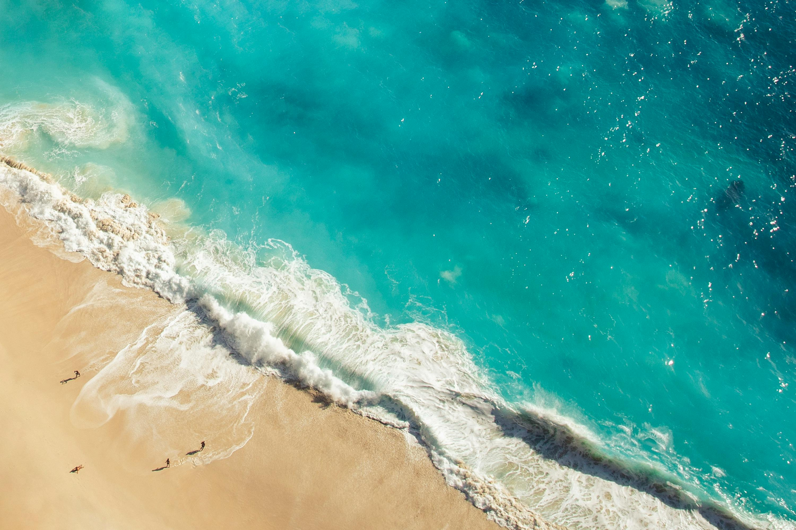
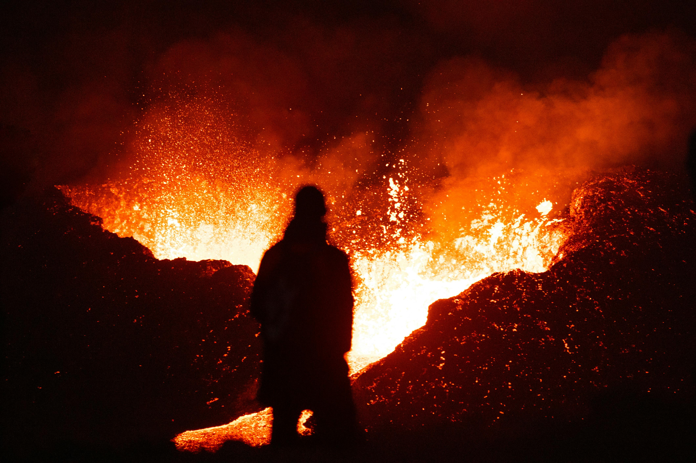

Галерея




Балі є одним з найпопулярніших туристичних напрямків у світі завдяки своїй унікальній комбінації від природної краси та культурного багатства у вигляді храмів до фестивалів та вулканів.
Чому Балі вважається одним з найкращих міст для тих хто хоче дізнатися більше стародавньої історії та одночасно відтянутись по повній?
Балі відомий своїми дивовижними пляжами, теплим океаном та розкішними курортами. Це ідеальне місце для серфінгу та снорклінгу, де можна дослідити різноманітні коралові рифи та морське життя. Крім того, Балі пропонує унікальну можливість насолодитися культурними подіями та традиціями, які збереглися протягом століть.
Культура Балі відображає вплив різних цивілізацій, що прийшли сюди протягом історії. Від індуїстських храмів до балінезійських танців – всі вони залишили свій слід у музиці, танцях, кухні та мистецтві Балі. Одним з найважливіших культурних елементів є музика гамелан, яка виконується на традиційних інструментах.
Балі також славиться своїми легендами та міфами, які передаються з покоління в покоління. Однією з найвідоміших є легенда про Баронга, духа-захисника, який бореться з злими духами. Ці та інші легенди роблять Балі ще більш захоплюючим місцем для відвідування. Пориньте в цю екзотичну культуру та насолоджуйтеся незабутнім відпочинком на Балі!